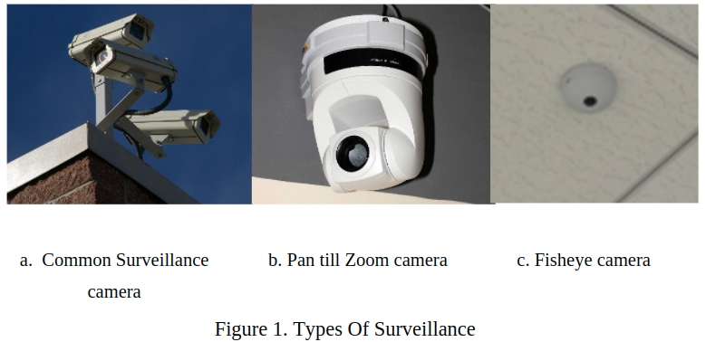
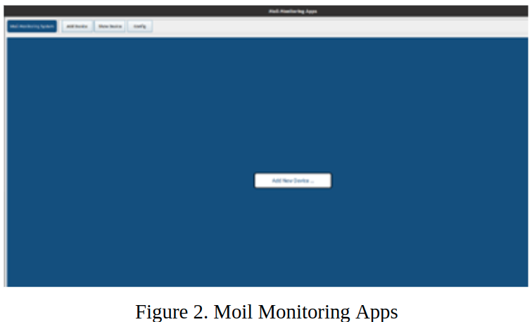
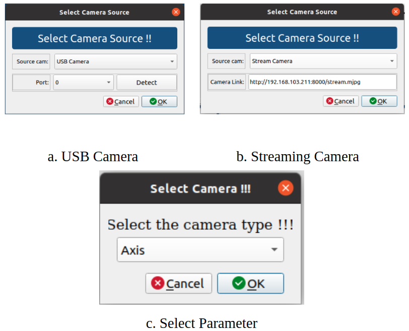
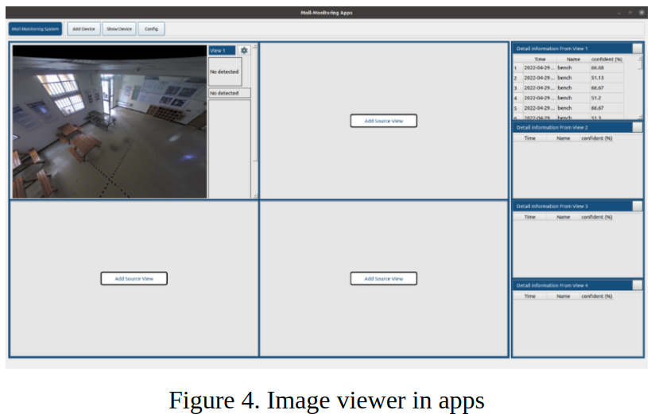
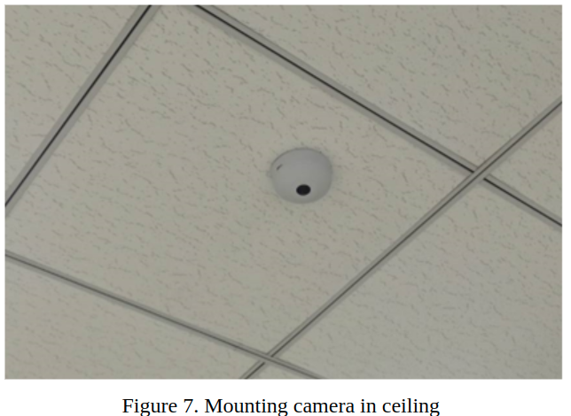
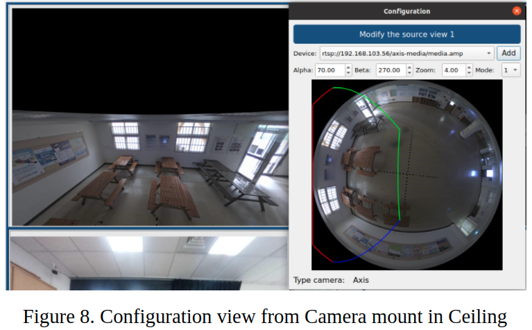
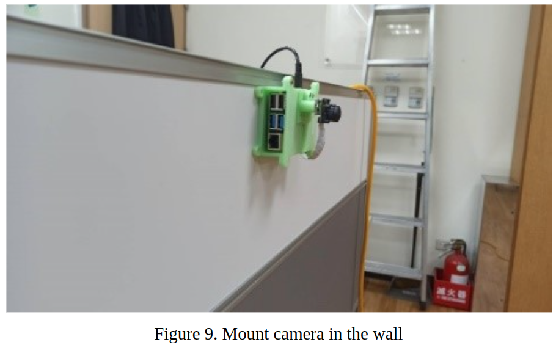
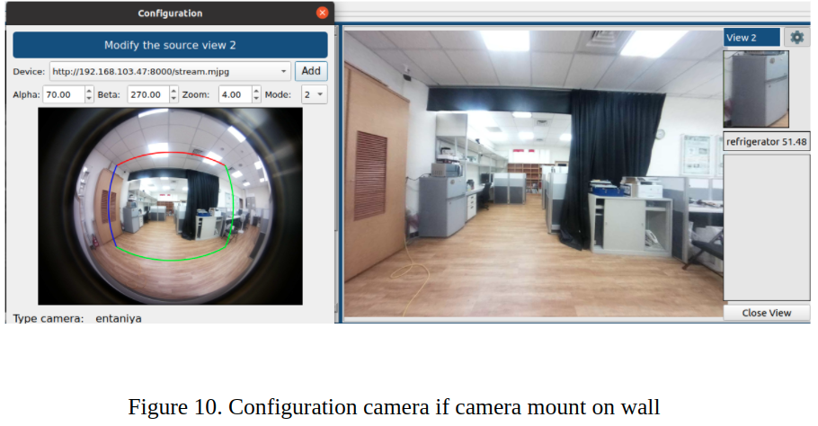
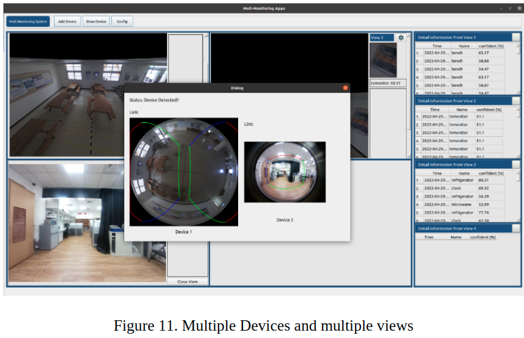

Moil Monitoring System
Camera is a device that can capture an image or video. One of the uses of the camera is that it can be used as monitoring of an environment called a surveillance camera.
Now many cameras are installed in government offices, business offices and even schools to help increase the level of public safety.
Surveillance cameras are usually placed in the corner of the room to see one side because the camera has a small viewing angle. Because of this deficiency, the camera developed into a pan till zoom (PTZ) camera,
which can move left and right, down, and up and zooming that can allow user to see other area easily. And now the fisheye camera has begun to be widely used to replace the two types of cameras.
Fisheye cameras are cameras that have a wide range of angles of view that are different from ordinary cameras that have a small view.
Even though it has a wide view, fisheye cameras have high image distortion, such as an object that looks curved or an object is not clear so that the image is not very good. if this problem can be solved it will
produce the same image as other cameras and can also reach a wider area instead of a PTZ camera

Propose Method
This session will explain in detail about the library used.
a. Moil Monitoring Application
We (Moil Laboratory) tried to develop a fisheye camera to solve the distortion camera problem in fisheye images and make it simpler and can replace PTZ cameras. we created an
application that can process fisheye cameras and make it a monitoring camera. This application can maximize the FoV of the fisheye camera so that it can replace the PTZ camera.
This application can process USB camera and streaming camera simultaneously. Before running this application, the camera will be calibrated first by the moil lab and then will get parameters that can be used by each camera with the same model type.
To maximize the use of the fisheye camera, there are two modes that can be used depending on the position the camera is placed in, whether it is mounted on a wall or mounted on the ceiling.
b. User Interface
We designed a user interface that is useful in helping users perform monitoring. The image below is an image of the initial display of the software that we created. At the initial stage the user can add
the device first. if the camera used is a USB camera, then make sure the camera is connected to a computer or laptop. if the camera used is a web camera, make sure the camera is connected to the same network so that the camera can be accessed by Ip address.

After opening the application, the next step is to select "add new devices" then select the camera and select the parameters used for the camera. don't be afraid if you use multiple cameras because this application can run more than two cameras at once.

After selecting the camera and parameters, the UI will change to something like the image below. in the initial display will use the camera mode on the wall.

From the picture above by default it displays views for the camera on the ceiling. In views 1 it will display the button configuration and will also display detailed information depending on the application used.
in the picture above the application is used to detect objects so that it displays the detection time of the name and the level of identity of AI in detecting objects. in the picture above there are four different view options so that they can be used to maximize the FOV of the fisheye camera.
c. Camera mount in ceiling
As previously explained, the camera can be mounted in two positions, mounted on the ceiling and the wall. Users can install the camera on the ceiling as shown in the figure below.

The image below is an image captured using a camera mounted on the ceiling of a room. Users can change the direction of the view they want to see by clicking on the image in the configuration. The user can also change the camera devices
by selecting the list of available devices, if it is not legible, the camera source can be added again. When opening the device, the first time the selected mode is mode 1 (camera mode installed on the ceiling). The red, blue, and green lines are the lines from the region the user wants to see, and the red is the top side.

d. Camera mount in wall
An example of using the application if you use a wall-mounted camera is as shown in the Figure below.

In configuring, the first is to change the mode to mode 2 then the image will change the view. for other functions the same as the camera position mounted on the ceiling.

e. Multiview’s and multiple devices
Moil applications can use more than one camera device simultaneously. This application also provides four different views and can be changed according to user needs. when selecting "show devices" you will see the active devices and the area currently being displayed in the views.

Application
This moil monitoring app can be used with various applications according to your needs. Some of the options include:
a. Monitoring activity
Users can monitor activities by using this application. Monitoring activities are carried out to prevent bad things from happening, such as putting a camera at home to monitor family members or being installed in
the office to see how employees are working and many other things. Cameras can also be placed in open areas such as public places, roads to minimize crime and increase the sense of security for the community. The application can be combined with AI so that it can detect a phenomenon that occurs such as,
what activities are being carried out, who is in the room and others.
b. Face Recognition
The face is one of the body parts that is unique and different from the others. By using face recognition, we can recognize someone's face and use it for various scenarios. The first is face recognition for attendance, with face recognition,
attendance that needs to use fingerprints is no longer needed because of physical contact which can be dangerous. the second is to detect someone who is in a public place who can do bad things so that it can increase security for the community. Third, as a home security, when the homeowner leaves, it is possible for
a stranger to enter the house so that we can prevent the possibility of theft
c. Traffic Monitoring
The highway is one of the public places that must receive attention because of the many accidents and motorists who do not obey the regulations. With traffic monitoring, we can minimize this and take immediate action.
d. Plate Recognition
Every vehicle must have a different plate number. With this plate, we can identify the owner of the vehicle. By recognizing the plate, we can use applications with different scenarios.
First, detect road vehicles that make mistakes or reckless on the streets. With plate recognition, it will be easy to recognize the user of the vehicle. Second, the toll payment does not need to be paid directly on the spot. With plate recognition, the toll system only needs to detect that a vehicle with a
certain number plate has entered the toll road so that the payment bill will automatically enter the bank account. Third, parking vehicles do not need to carry money anymore, just come to the parking lot, then when the camera detects a vehicle, it will detect the number plate and the position number of the parking lot. Once completed,
the vehicle owner can pay the bill when he leaves the parking lot. Other applications that may occur are for vehicle data in one place and other applications.